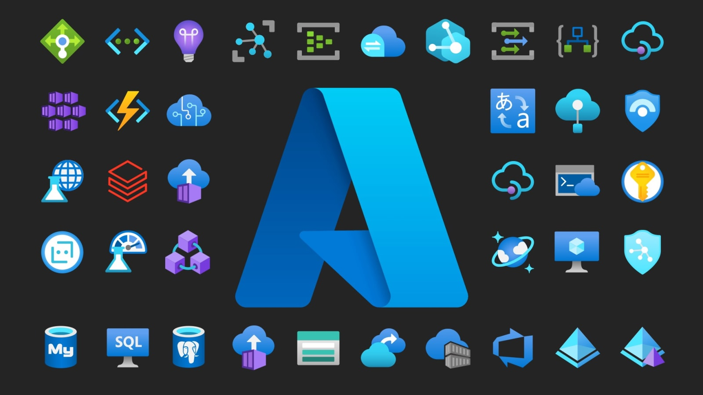
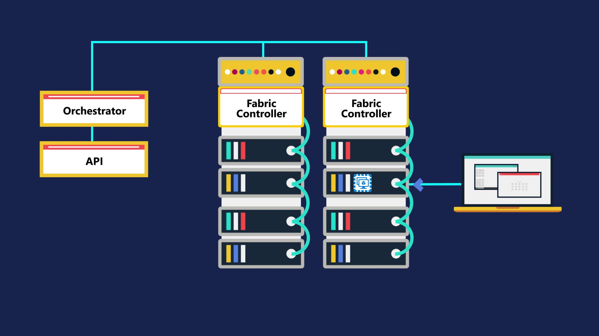

Blog Post One: Intro To Azure
My first ever blog post where I look into what Microsoft Azure is and how it works.
Hi all, this is my first blog like posting so bear with me, while I do my best. To start off my
name is Brent, I am a second year IT software development student, my reasoning for writing this
blog post is for my emerging trends class. In this class we were tasked with choosing an
emerging trend that interested us, where we would then research and share our findings on a
blog. After reviewing a few options, I narrowed my choices down to and selected Microsoft Azure.
The reason I have chosen Microsoft Azure is because cloud computing is becoming extremely
popular, and the industry is now looking for skills and experience in Aure or AWS. Azure is the
more popular of the two currently, so therefore I have decided to explore it. To start off, here
is a basic description of what Microsoft Azure is; Microsoft Azure is a cloud computing platform
that allows access to tons of features from computing, networking, web, database and more. Well,
what exactly is cloud computing, for those of you who are not sure, the definition taken from
the Microsoft Azure website states:
“Simply put, cloud computing is the delivery of computing services—including servers,
storage, databases, networking, software, analytics, and intelligence—over the Internet (“the
cloud”) to offer faster innovation, flexible resources, and economies of scale. You typically
pay only for cloud services you use, helping you lower your operating costs, run your
infrastructure more efficiently, and scale as your business needs change.” - Microsoft Azure
This provides a great understanding of what cloud computing is and it lists some great
points of how cloud computing can be beneficial, which leads us into what Azure has to offer. As
mentioned before Azure is a cloud computing service made by Microsoft. It is available 24/7,
offers private cloud and public cloud options, as well as hybrid or full cloud options. One of
the biggest benefits to a company that Azure provides is the ability to no longer require your
own datacenter, and instead use one in the cloud that can be scaled to meet whatever
requirements. Allowing this scalability means that you only pay for what you use, which gives a
huge range of options and prices since all together Azure currently has six hundred and
twenty-three different services between the twenty-two categories it offers. I am currently on a
free account that offers twenty-five services that are always free and 28 services that have
12-month
free access. Azure service categories range from database, computing, security, AI, networking,
media, storage, containers, dev tools, IOT, data analytics, monitoring, and integration. Some
services of Azure include: servers, web platforms, disaster recovery, backup, dev testing,
storage, and more, a few of these I will be touching on in more detail in the future. Many of
these services are directed towards a specific role within the IT industry, the roles that azure
focuses on are Data Scientists, Ai Engineers, Developers, DevOps Engineers, Data Engineers, and
Security Engineers. According to Microsoft, Azure has been designed to provide an agile method
to build,
deploy, and manage applications so it is made easy for IT professionals, which stands true based
on the 79 different downloadable software programs, 68 different video lessons pertaining to the
above
roles along with business users, the 40 templates for various scenarios that both are free and
cost depending on the template selected, as well as the resource management tools to prevent
unwanted/accidental expenses. So, in summary Microsoft Azure is an extremely developed
application that provides any user with tons of easy-to-use and cost-effective services.

Now knowing what Azure can do, it is time to look into how it all works. It starts off
with a server using virtualization to run multiple virtual machines, and each virtual machine is
able to run a different operating system, Microsoft does this virtualization process in all of
their Azure datacenters across the world. Within a datacenter, there are tons of servers that
each have a hypervisor installed so they can run multiple virtual machines. All of the servers
are connected by network switches, and each of the server racks have one server that runs a
piece of software called an orchestrator, this software manages everything that happens on
Azure. How this works is, the user can make requests, all these requests are made using the
orchestrators web API, or simply called the UI of the Azure portal. So when a user requests to
create a virtual machine, the orchestra packages up all of the requirements and sends the
package to the best server based on the request. The virtual machine is then setup on the
selected server, where the user can shortly connect.

Now that we know how the basics of Azure work we can look at some of the individual
service categories and their services, starting off with compute. The compute services are on
demand services that allow cloud-based applications to run. The compute services include Azure
virtual machines, which allow a user to setup a Windows or Linux server, next is Azure App
service, this is used for deploying and hosting web or mobile apps. There are also Azure
container services, these are like virtual machines except they do not have an operating system,
only self-contained software environments. There are two services that are more limited versions
of the some of the services listed above, one is Azure Kubernetes Services, which are a
container orchestra, the next service is Azure Functions, which is like Azure app service but
instead of running a whole application it only executes specific functions.
The next category I investigated was Azures storage options, which is exactly what it
sounds like, cloud storage. The storage services are made up of, Azure blob storage, a method of
object storage, that uses a flat structure, and has a collection of files that are sorted into
tiers. The tiers are: hot, meaning they are accessed frequently; cold, meaning they are accessed
every month or so; and archive, meaning they are rarely accessed. Next is Azure file storage,
this is azures storage that is like a normal file server, these instances can be mounted onto
windows servers. Azure Data Lake Storage Gen2 is paired and used with data analytic apps, then
we get into databases. Azure SQL database, is their SQL server, then Azure Database for open
source, allows users to use MySQL, MariaDB, or PostgreSQL. If you need ever more storage, then
Azure Synapse Analytics is more like a data warehouse. If SQL is not your style, then they offer
Azure Cosmos Database, or Azure Cache for Redis, which is used to speed up applications by
caching frequently accessed data.
The last category I looked at was networking. Azure networking allows data to be
transferred through the cloud and prevents the need to build a network down to the wire. The
features included in the networking category are VNet, a virtual network. On these networks
virtual machines can be assigned IPs, they can be organized into subnets, policies can be set
about outbound traffic, and public IP addresses can be assigned so inbound traffic can be
received. It also has the ability to have VNet pairing to connect two different virtual
networks. Another feature is Azure VPN, by using this it allows secure connections between
virtual networks and a on premise networks, which is done by encrypting traffic before sending
it across public networks. If you need more security then Azure offers their express route
feature, this securely connects a virtual network to an on-premises network by using a private
dedicated connection.
After looking into what Azure is and how it works, I started looking into how I would be
able to create a web app where I could host my blog post. Below is a breakdown of the steps I
had to take to implement my idea, so after creating my account and signing in it takes you to
the Azure dashboard, towards the top there is a navigation board, on the right side there is a
button that will open the Azure Cloud Shell. After clicking that it will start a cloud shell
instance and you can choose to use the bash or PowerShell command line. I selected bash, so I do
not know if the PowerShell commands would be different. Getting started the first thing you want
to do
is create a new directory and move there off of the root. Once in your new directory you are
able to clone in an
existing project using git, in this case I cloned in the default Azure template for static html
pages to use as a foundation. After cloning your project, you are going to create a web app, you
do this by changing into your project directory and running the “az webapp up” command along
with some following parameters (server location, app name, and project language) like so:
az webapp up --location {server_location} --name {app_name} --html